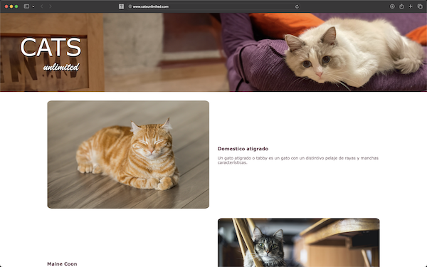
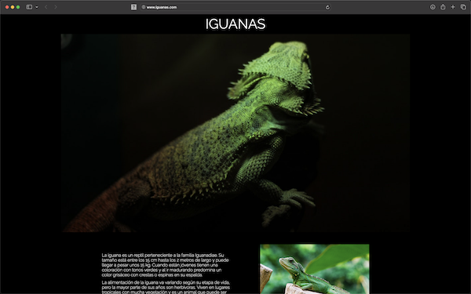
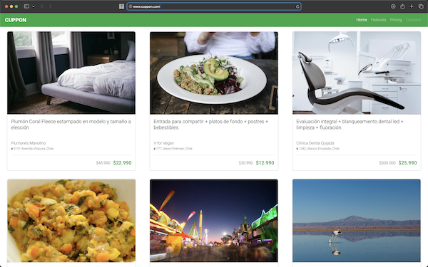

Listado de desarrollos web
A lo largo de mi historia, estos son los desarrollos que he realizado.
Curriculum v1
Este fue el primer Curriculum Vitae desarrollado solo con HTML.


Cats Unlimited
Website construido para una organización que promociona los beneficios de tener gatos. Fue construido con HTML y CSS.
Iguanas
Este sitio busca dar a concer la iguana verde al mundo y mostrar su maravillosas características. Fue construido con HTML y CSS.


Cuppon
Website construido para la venta productos a precios promocionales mediante el uso de cupones de descuento. Fue construido con HTML, CSS y Bootstrap.